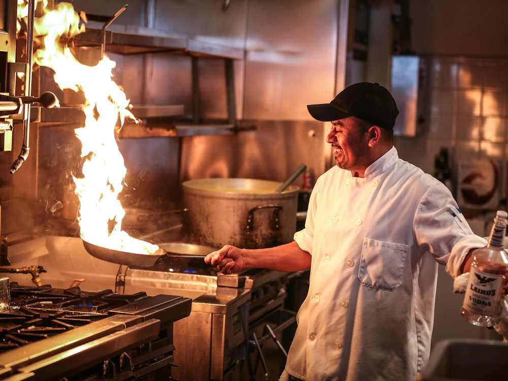

Шашлыкоff
Бар · Гриль-бар · Алматы
Рейтинг 2ГИС
★ 4.4
6 242 оценок
Год открытия
нет данных
в открытых источниках не нашли
Средний чек
≈5 000 ₸
оценка по типу заведения
Адрес и часы
📍 ул. Толе би, 89, Алматы · Алмалинский район
🕒 часы работы уточняются — смотрите в 2ГИС
Удобства
О заведении
Круглосуточный гриль-бар, по выходным живая музыка.
Меню
Рядом в справочнике
Хинкальная · Хороший год · Чингу · Шашлычный двор · Щука bistro · Юг22